Projects
Life cycle assessment sustainability analysis on e-readers vs. books (Fall 2024)
In this project, I learned how to research and conduct a cradle-to-gate life cycle analysis including uncertainty analysis, using openLCA software.
Analysis on electric vehicles as a climate solution (Fall 2024)
This was a research project aimed at recommendations for climate change mitigation involving transportation.
ESS 330 Lab 1: Personal Portfolio
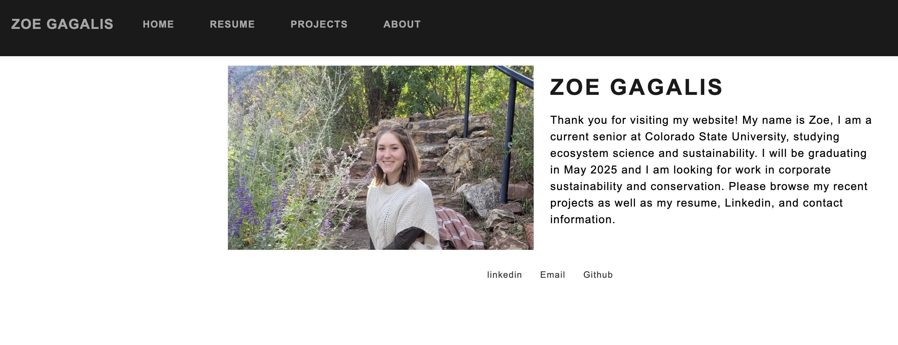
This was an assignment where I used Quarto and Github to create a personal website, showcasing information about myself, such as my contact information, resume, and projects I have done throughout my experience at Colorado State University. In this assignment, I learned the basics of Github, creating repositories, pushing content, and deploying my rendered Quarto document as a webpage as well as some basics in web design and making the site look professional and aesthetically pleasing.
ESS 330 Lab 2: Minnesota Tree Growth
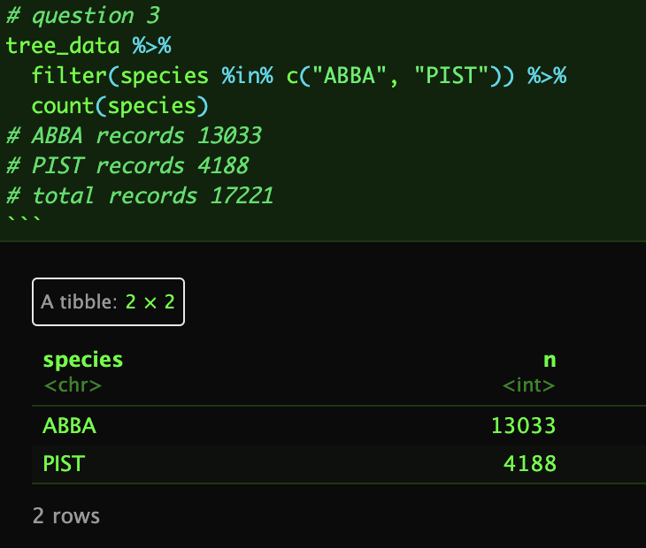
In this lab, I got my first basic experience with data manipulation. It included a lot of practice using a large data set, and understanding how to pull out and interpret desired values, as well as reshaping the data frame to fit the needs of the project. It was also my first real experience using functions in the ‘dplyr’ package, which was really useful for working with the data. This lab also included practice connecting R projects with Github. I learned a lot about manipulating data sets and pulling out desired values for analysis.
ESS 330 Lab 3: COVID Wrangling
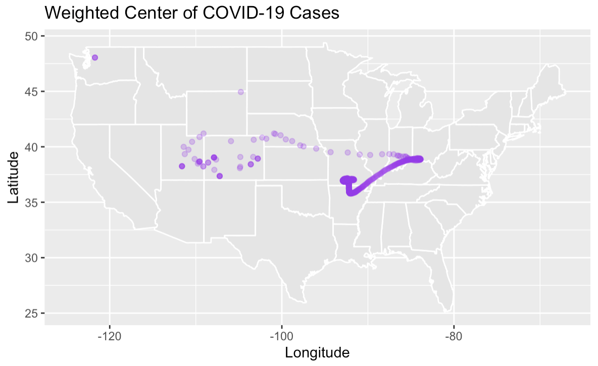
This lab used the ‘tidyverse’ package to practice data wrangling and visualization for information about the COVID-19 pandemic, using New York Times public data. I learned the value of having access to detailed public data like this, and I learned multiple ways of using this data. Starting off, the data was analyzed based on daily case statistics by county, then the data was normalized using supplementary population data from the US Census, and we used flextables to help examine the “new” data. We filtered the data to show the counties with the highest case numbers over the last two weeks (per 100,000 people), then we extracted the number of recorded COVID deaths by county. We then made a faceted bar plot to show daily new cases for New York, Colorado, Alabama, and Ohio. The data was then examined spatially by calculating the weighted mean center, to show how cases (and deaths) moved through the US over time. In this lab I continued to build on my knowledge of data wrangling and manipulation, and at this point I was definitely starting to get more comfortable working with bigger data sets.
ESS 330 Lab 4: Statistics in R
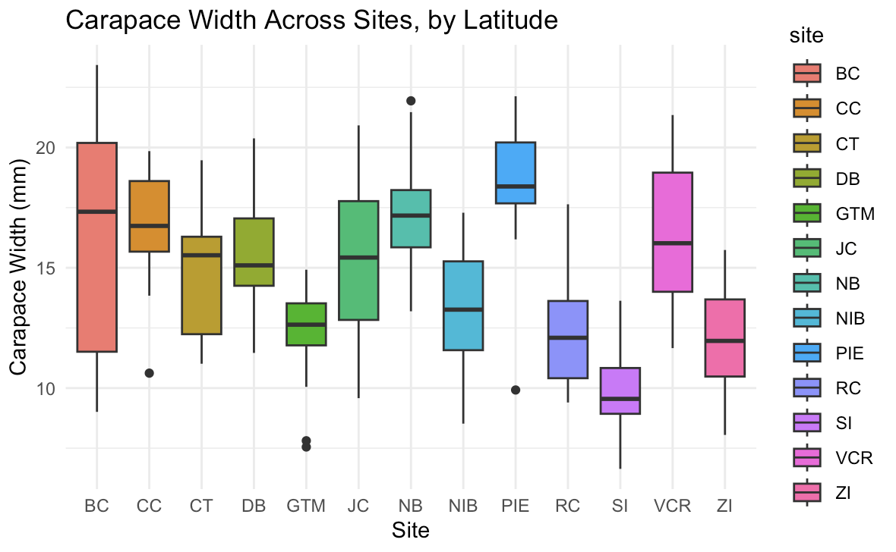
For this assignment, we used data on cutthroat trout and coastal giant salamanders from the Andrews Forest LTER facility and data on fiddler crabs from the Plum Island Ecosystem LTER. Statistical tests we conducted include: Chi-square analysis, t-tests (Welch two-sample, f-test, etc.), correlation assessments (Spearman test), distribution tests, Shapiro-Wilk normality test, ANOVA, Tukey HSD test, and linear regression models. Using all of these methods, we assessed measurements like crab carapace width by site, impact of water temperature on size, salamander lengths and weights, and trout lengths based on various factors. This lab was a great refresher on statistics, which was fuzzy for me. Understanding the function of each different statistical test and result was crucial in understanding analyses from subsequent labs and my semester project.
ESS 330 Lab 5: Project Proposals
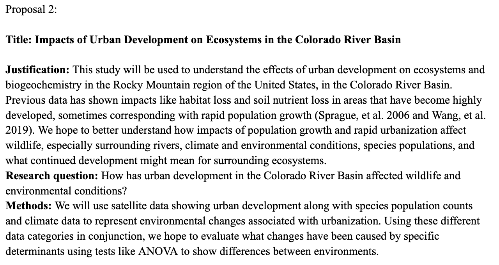
For this lab, I worked with a group of my classmates to propose a topic for our semester project. Each of us supplied two ideas with background information, and then one topic was selected to be the focus of our report. I proposed ideas based on impacts of water pollution in Michigan lakes and rivers and effects of urban development in the Colorado River Basin. The project we ultimately chose to move forward with was from one of my classmate’s proposals, which was about wolf reintroduction in Yellowstone National Park and the way this conservation initiative caused trophic cascades within the ecosystem.
ESS 330 Lab 6: ML Workflows
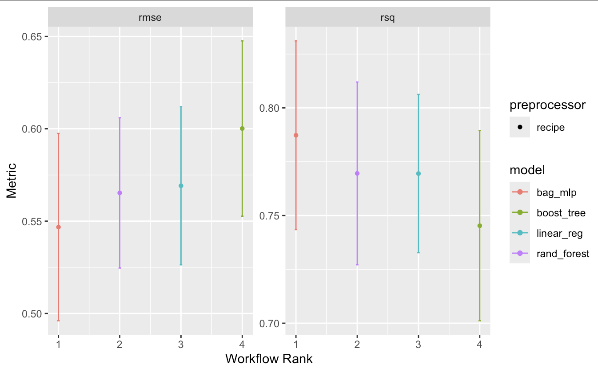
In this lab, we used the CAMELS dataset, which provides information on hundreds of US river basins. We used the information in the data to predict streamflow for various river basins, using ‘tidymodels’ to do predictive modeling for the different sites. We worked on training models for these predictions, and we practiced interpretation of model performance. We made a map showing mean streamflow using the ggplot package, then we made maps and plots showing aridity and precipitation, and we examined how these factors impact streamflow. For the rest of our analysis, we transformed and preprocessed the data using a recipe, where we prepped and baked training data to then fit a linear model. I learned a lot about evaluating what makes a model “good” based on a dataset, as well as practice implementing workflows, which was a new concept for me.
ESS 330 Lab 7: Intro/Data/Methods Draft
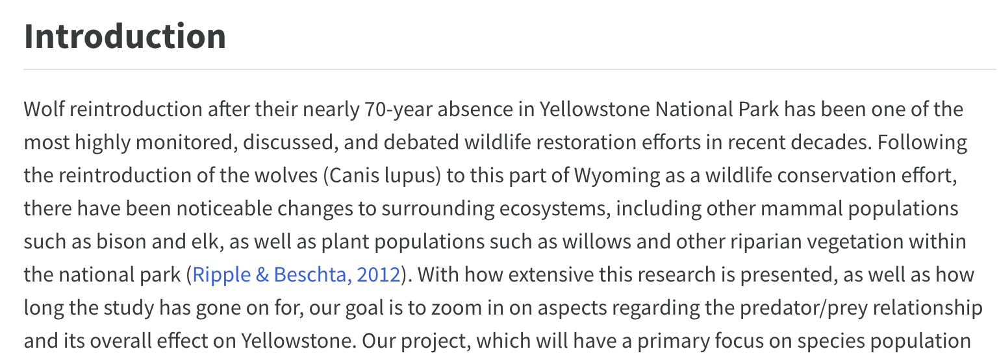
This lab was focused on the semester project (Yellowstone Wolf Reintroduction) so my group members and I found data for our analysis, did background research into the purpose and importance of this conservation effort and the effects that it had on the ecosystem. Specifically, we researched how wolf populations impacted elk and bison populations, as well as some background on various types of vegetation. We also planned out what types of models and statistical tests we planned to use, including ARIMA models and GLMs, to visualize and understand our data. We looked a population trends over time, observing how wolf populations have varied (increasing and decreasing) over time, the decrease and leveling out of elk populations, and the increase and plateau of bison populations. We also used our models to evaluate how population counts of each species can be used to predict the populations of other species.
ESS 330 Lab 8: ML Tuning
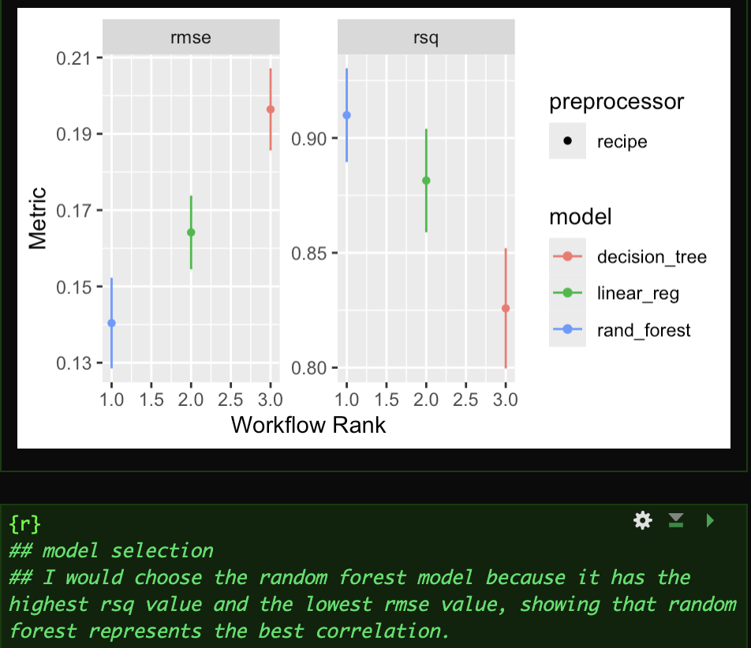
In this lab, I worked off of what I had already done in Lab 6 to perform further analysis and to get more practice with machine learning. I learned how to clean data and split it into training and testing data to prepare for fitting models. We tested 3 different models (log regression, decision tree, and random forest), ultimately deciding that the random forest model was the best choice due to its higher RSQ value and low RMSE value. We had been getting practice evaluating models throughout previous labs, but this comparison was really helpful for my understanding of how to choose the best model for a dataset. We got more practice creating workflows and manipulating hyperparameters to make the best possible model, which we then verified by collecting metrics and predictions to test performance and predictions on our test data. We then made two maps, one of the residuals and one of the predictions, and finally combining these into a single figure. This was a ton of new information and I learned a lot in this lab about model tuning, another new concept for me. With practice, I know this is a very powerful (and necessary) tool for data analysis.
ESS 330 Lab 9: Results/Discussion Draft
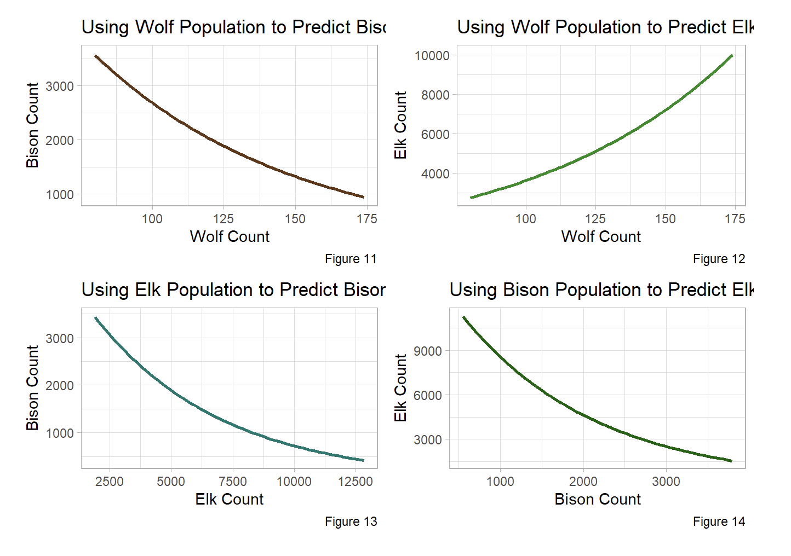
Another installment of our semester project, this is where we described the findings from our data analysis for our Yellowstone wolf reintroduction project. We explained the relationships between all our different species populations of interest based on our models and statistical testing. This is also where we addressed whether or not to reject our hypothesis. Our analysis showed that the data supports our hypothesis that wolf reintroduction caused a trophic cascade in Yellowstone, impacting various species populations. In our discussion, we outlined the results in a digestible way, digging into how changes in wolf population subsequently impacted bison, elk, and some vegetation populations based on predation, resource competition, and other factors.
ESS 330 Lab 10: Distance to the Border
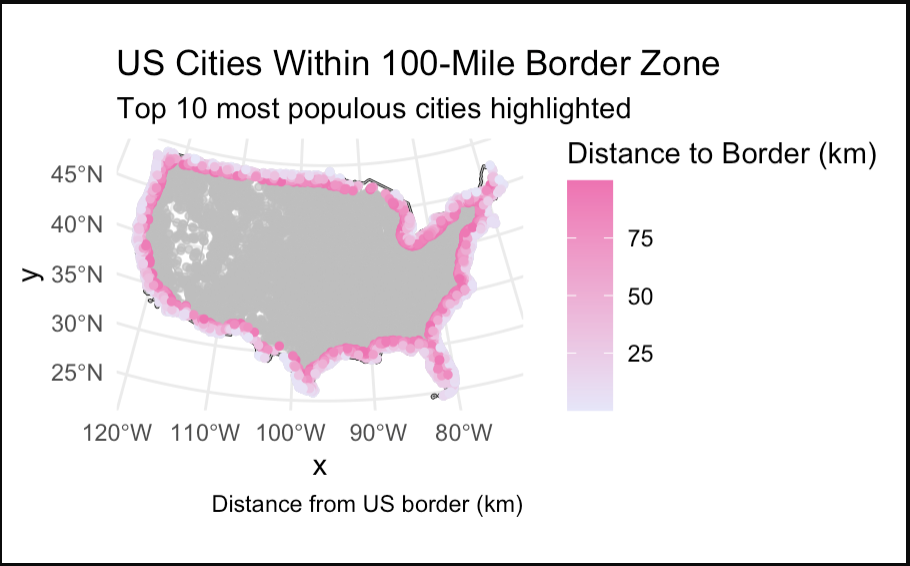
This assignment focused more on data wrangling and visualization, using spatial and geographical data from North America. I got a refresher on map projections and coordinate systems, as the lab was focused on cities, states, and country boundaries and we made various multiple to illustrate various components of the data. We calculated distances of US states to the US border, state borders, the Mexico border, and the Canada border, making maps to visualize these calculations. We made a table displaying values for how many cities are in the 100-mile US border zone, how many people live there, percentage of the total population, and an evaluation to see if our estimates matched information provided by the ACLU. Lastly, we mapped this data, showing cities in this zone and the 10 most populous of these cities. With each lab, I have been able to build on practical knowledge with understanding data sets, cleaning data, and mapping/plotting key aspects from the data.
ESS 330 Lab 11: Lightning-talk Presentations
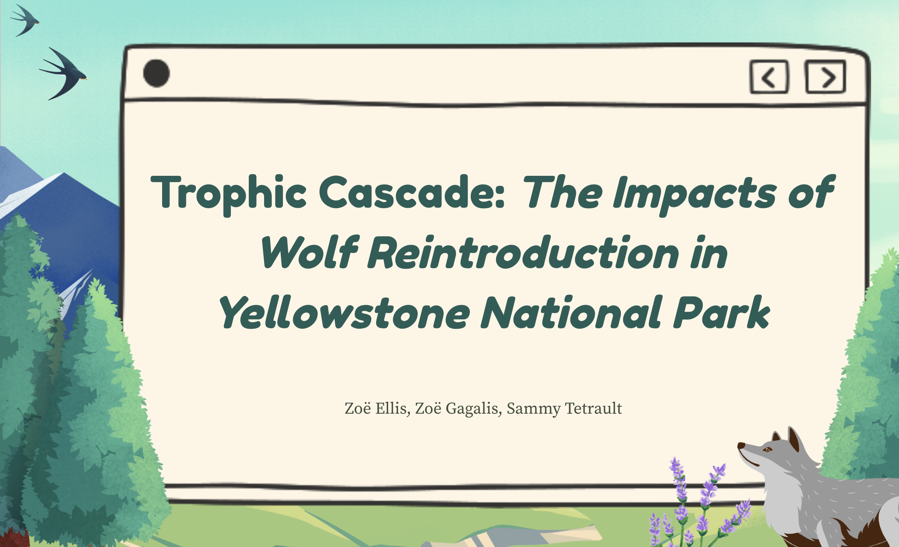
This is where my group and I finally presented our findings from our semester project on wolf reintroduction in Yellowstone. We made a slide deck introducing our project, providing background information and our hypothesis and research question, explaining our methods, models, and results, and conclusions on our study and its importance for Yellowstone and for applications of similar conservation efforts in other parts of the world. We explained how this research can impact future studies, and how it served as a jumping-off point for Colorado’s wolf reintroduction initiative over the last few years. I presented the introduction, background research, and hypothesis, as well as talking about the importance of the study.